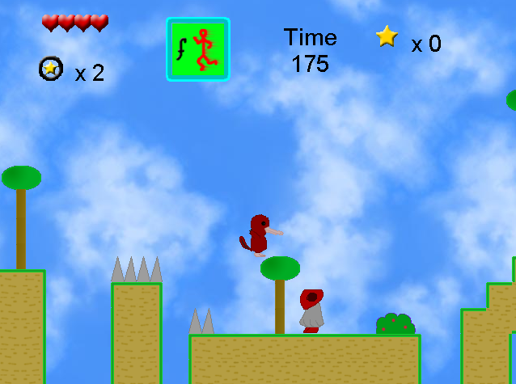
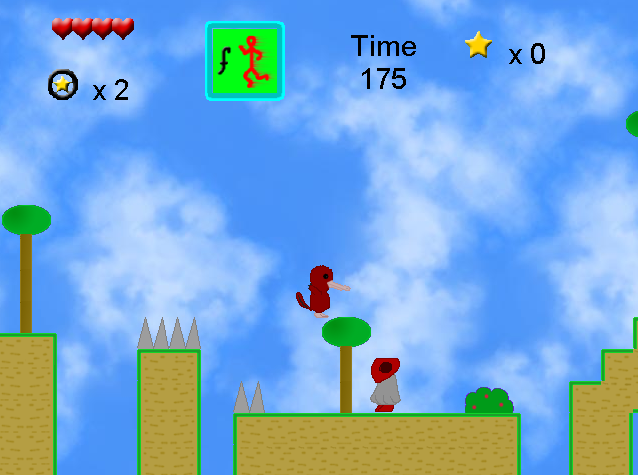

Um jogo de plataforma onde um ornitorrinco combate alienígenas pra salvar a sua floresta. Não lembro bem qual a história por trás desse, é de uma época em que eu estava fascinado com o absurdo dos ornitorrincos. Ele tem erros no início porque algum arquivo foi perdido em algum momento (eventualmente pretendo corrigir isso). Mas se você clicar em “Ignore” várias vezes, eventualmente o jogo o começa.
 
